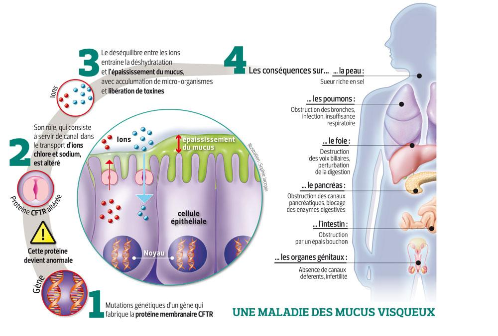

I) La mucoviscidose
C’est en 1989 que les scientifiques ont réussi à identifier le gène responsable de la maladie de la mucoviscidose : c’est le gène CFTR (pour Cystic Fibrosis Transmembrane conductance Regulator) qui se situe sur le chromosome n° 7. Cette maladie grave se caractérise par une anomalie dans le transport du sel dans l’organisme. Celle-ci est à l’origine de la présence d’un mucus trop épais qui conduit à l’obstruction des canaux de certains organes et à des infections bactériennes chroniques.

D'après une étude réalisée en 2012, la mucoviscidose toucherait jusqu’à 70 000 personnes dans le monde, dont près de 6 000 Français. Chaque année, ce sont 200 enfants qui naissent en France porteurs de cette maladie génétique grave, soit un enfant sur 4 500. La maladie est inégalement répartie géographiquement, en raison des différents socles génétiques: en effet, un enfant sur 3 000 est concerné en Bretagne, contre "seulement" un sur 8 000 dans le Languedoc Roussillon. A l’échelle mondiale, les populations d’Europe sont plus affectées que les populations d’Afrique ou d’Asie.
L’espérance de vie des personnes atteintes de la mucoviscidose n'a pas encore dépassé la barre des 50 ans. Cependant, elle a fortement augmenté ces dernières années en passant de 5 ans d'espérance de vie en 1960 à 26 ans en 1990 et à 40 ans en 2010. Cela s’explique grâce aux progrès dans la connaissance de cette maladie, à un dépistage précoce et à des traitements ayant pour objectif de lutter contre les infections bactériennes chroniques et les autres symptômes de la mucoviscidose. L’augmentation de l’espérance de vie a permis, alors que c’était infaisable auparavant, l’apparition de couple avec un ou deux des parents étant malades. Pour éviter, dans des couples d’un individu malade et d’un individu sain, que les enfants soient atteints de la mucoviscidose, des conseils génétiques et des enquêtes familiales sont encouragées.
Le plus souvent, les tests de dépistage permettent de mettre en évidence la maladie dès la naissance. Le premier test consiste à prélever plusieurs gouttes dans le talon du nouveau-né (âgé de 3 jours), celles-ci sont analysées pour évaluer la quantité de trypsine immunoréactive dans le sang. C’est une protéine de type enzymatique qui passe dans le sang plus facilement quand un mucus épais obstrue certains canaux d’organes. Plus le taux de concentration de cette enzyme dans le sang est élevé, plus les risques d’être atteint de la mucoviscidose sont grands. Si les risques sont conséquents, une seconde analyse du sang a lieu et a pour but de rechercher les mutations sur le gène CFTR. Si ce test génétique est positif, alors un troisième test est effectué sur le patient : le test dit de la sueur. Plusieurs gouttes de sueur sont prélevées, après avoir encouragé la sudation du patient. En effet, chez les individus atteints de la mucoviscidose, le taux de concentration en sel de la sueur est particulièrement haut.
Du côté de la recherche scientifique, il existe deux différents objectifs tenus par les généticiens : certains veulent traiter le gène muté pour obtenir une protéine correcte, capable de remplir ses fonctions ; d’autres préfèrent se concentrer sur le traitement et l’atténuation des symptômes de la maladie.
La mucoviscidose est une maladie génétique due à une mutation du gène codant la protéine CFTR. Pour bien comprendre quelles perturbations sont engendrées par cette mutation, nous allons tout d’abord étudier le fonctionnement normal du transport du sel puis mettre en évidence les conséquences des mutations.
Chez un individu sain, les voies respiratoires sont recouvertes d’une substance visqueuse appelée mucus. Son rôle est de protéger et d’humidifier ces voies. Le mucus empêche les particules nocives inhalées d’atteindre les poumons. Ces particules sont évacuées avec le mucus par les mouvements puissants et coordonnés des cils de l’épithélium.
Dans l’information génétique des cellules de l’épithélium se trouve un gène (long de plus de 1500 acides aminés) appelé CFTR qui code la formation d’une protéine transmembranaire, le canal chlore, permettant le flux d’ions chlorures dans le mucus. Ce flux permet, par déséquilibre osmotique, le passage d’eau dans mucus, ce qui le fluidifie.
La présence d’un mucus fluide est nécessaire si l’on veut que le mucus soit évacué rapidement. En effet, une évacuation rapide permet d’empêcher les corps étrangers présents dans le mucus d’atteindre les cellules épithéliales et donc d’éviter au maximum les infections et inflammations chroniques.
Chez les individus atteints, le gène codant la protéine CFTR est altéré. Il existe plus de 2000 mutations différentes mais elles peuvent toutes se regrouper en trois catégories majeures, en fonction des conséquences qu’elles ont sur la protéine. Dans le premier groupe, le canal produit est tronqué. Dans le second, le canal ne se met pas en place, et dans le troisième, il ne peut ne pas s’ouvrir. Dans tous les cas, il conduit à une protéine différente qui lors du redéploiement tridimensionnel est incapable de remplir ses fonctions.
La mutation la plus fréquente est la mutation Delta F508 (ou F508del). Un acide aminé , la phénylalanine (un des acides aminés essentiels, noté F) manque à la chaîne polypeptidique à la 508ème place, où il se trouve normalement chez les individus sains. La cellule est cependant capable de produire un canal chlore à peu près fonctionnel. Un système de contrôle qualité empêche cependant la formation, au niveau des ribosomes, de la protéine CFTR. Le canal, bien que fonctionnel, est repéré comme défectueux et n’atteindra pas la membrane cellulaire. Cette mutation est présente chez 70% des malades de manière hétérozygote (c’est-à-dire deux allèles différents du gène CFTR) et chez 50% des malades sous forme homozygote (deux fois le même allèle du gène).
Près de 10% des cas de mucoviscidose dans le monde présentent une mutation qui cause un canal tronqué. Les patients présentant cette mutation sont plus susceptibles de ne pas pouvoir voir leur protéine CFTR réparée (car il est plus difficile de reconstituer le canal), mais les traitements auront plutôt pour but d’atténuer les symptômes. La mutation W1282X par ailleurs est une mutation où un codon stop apparaît à la place d’un acide aminé tryptophane. Tout cela n’est dû qu’à une simple erreur de copie de l’ADN : le passage d’un nucléotide C en nucléotide T conduit sur le brin codant à un codon UGA au lieu de UGG. La conséquence est qu’il manque 200 acides aminés environ à la protéine finale qui est trop petite et ne peut donc pas assurer ses fonctions.

Dans tous les cas, les protéines transmembranaires sont incapables de remplir leurs fonctions, ce qui signifie que les ions chlorures (ou en tout cas une grande partie d’entre eux) ne peuvent se retrouver dans le mucus, qui n’est plus fluidifié et donc beaucoup plus difficile à évacuer. Par conséquent, le mucus stagne dans les voies respiratoires, ce qui conduit à des infections bactériennes chroniques et à une obstruction des voies respiratoires . Mais ces voies ne sont pas les seules touchées, et des canaux d'autres organes sont ainsi rendus inefficaces. Les populations atteintes souffrent donc d’insuffisances respiratoires, d’infections des tissus pulmonaires, mais aussi de problèmes de digestion, d’infertilité…
Aujourd’hui, il existe de multiples manières de s’occuper des individus atteints de la mucoviscidose. Les biologistes se sont penchés sur la question de permettre à la protéine CFTR de pouvoir assurer ses fonctions, mais veulent aussi, et surtout, atténuer l'expression de son phénotype.
Dès que, après les tests de dépistages un individu est reconnu comme étant atteint, il est suivi dans un centre spécialisé pour les malades de la mucoviscidose : le CRCM (centre de ressource et de compétence de la mucoviscidose). Là, on cherche à atténuer leurs symptômes (manifestations de la maladie), on parle alors d’un traitement symptomatique.
Ainsi, il existe de nombreuses thérapies permettant de combattre les symptômes de la mucoviscidose. Par exemple, l’oxygénothérapie permet d'aider les muscles à s’oxygéner, car un mucus trop épais gêne la circulation de l'oxygène. L’aérosolthérapie consiste à employer des aérosols pour liquéfier le mucus ou bloquer les infections. La kinésithérapie, elle consiste à déplacer le mucus et à l’évacuer. Le traitement repose aussi sur la prise de fluidifiants bronchiques, sur un traitement antibiotique trois à quatre fois par ans. Dans les cas les plus extrêmes, des greffes pulmonaires peuvent avoir lieu.
Une autre thérapie, la thérapie génique, a pour principe de corriger (pendant un certain laps de temps) le gène muté. Elle connaît deux fonctionnements : la thérapie IN VIVO, et la thérapie EX VIVO. La première thérapie consiste en l’insertion, dans les organes, d’un virus qui porte dans son information génétique le gène CFTR thérapeutique. Celui-ci va ajouter son génome dans celui de la cellule hôte. Cela permet donc la formation de protéines fonctionnelles capables d’assurer le flux des ions. La seconde thérapie, la thérapie génique EX VIVO a un fonctionnement similaire, c’est-à-dire le transfert d’un gène thérapeutique dans un vecteur viral, puis l’insertion du vecteur viral dans des cellules du patients. La seule différence est que dans la thérapie IN VIVO, l’insertion du vecteur viral a lieu au sein de l’organisme, alors que dans la thérapie EX VIVO, elle a lieu en dehors de l’organisme, dans une culture.Cependant, la plupart des essais pratiqués jusqu’à aujourd’hui ne se sont pas vraiment concluants, car les vecteurs viraux utilisés se sont montrés immunogènes. Les espoirs se tournent vers les vecteurs de synthèse (en particulier le GL67A.
Une autre thérapie, la thérapie génique, a pour principe de corriger (pendant un certain laps de temps) le gène muté. Elle connaît deux fonctionnements : la thérapie IN VIVO, et la thérapie EX VIVO. La première thérapie consiste en l’insertion, dans les organes, d’un virus qui porte dans son information génétique le gène CFTR thérapeutique. Celui-ci va ajouter son génome dans celui de la cellule hôte. Cela permet donc la formation de protéines fonctionnelles capables d’assurer le flux des ions. La seconde thérapie, la thérapie génique EX VIVO a un fonctionnement similaire, c’est-à-dire le transfert d’un gène thérapeutique dans un vecteur viral, puis l’insertion du vecteur viral dans des cellules du patient. La seule différence est que dans la thérapie IN VIVO, l’insertion du vecteur viral a lieu au sein de l’organisme, alors que dans la thérapie EX VIVO, elle a lieu en dehors de l’organisme, dans une culture. Cependant, la plupart des essais pratiqués jusqu’à aujourd’hui ne se sont pas vraiment concluants, car les vecteurs viraux utilisés se sont montrés immunogènes. Les espoirs se tournent vers les vecteurs de synthèse (en particulier le GL67A).
De son côté, la médecine progresse à tâtons et cherche si le canal CFTR fonctionne mieux en présence de tel ou tel médicaments. Des équipes internationales travaillent à développer des molécules qui réagissent avec la protéine CFTR et lui permettent de s’intégrer dans la membrane (médicaments correcteurs) ou bien d’activer son fonctionnement (les médicaments potentiateurs). Des résultats encourageants ont été remarqués autour du composé VX-809 et de la molécule ataluren, qui s’attaquerait aux mutations responsables de la formation de protéines tronquées. Les meilleures observations sont aujourd’hui tournées vers le VX-770 qui améliorerait de 50% l’efficacité du canal. C’est le médicament potentiateur kalydeco qui a été le premier à avoir été autorisé à être mis sur le marché européen en 2012. Mais il ne concerne aujourd’hui que 8 mutations, qui représentent un peu plus de 4% des patients diagnostiqués.